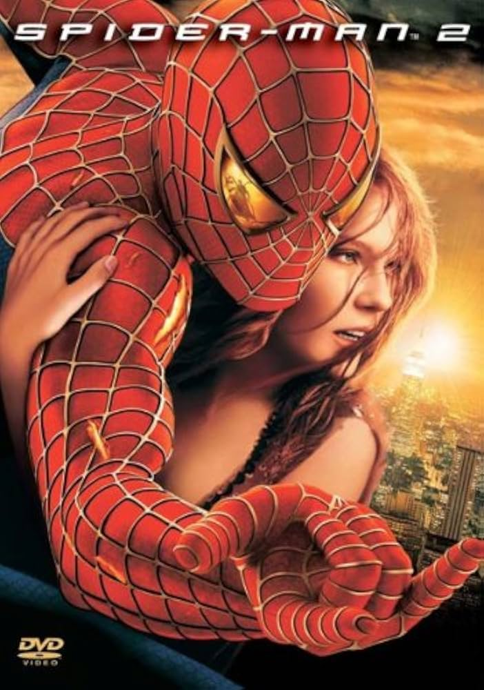
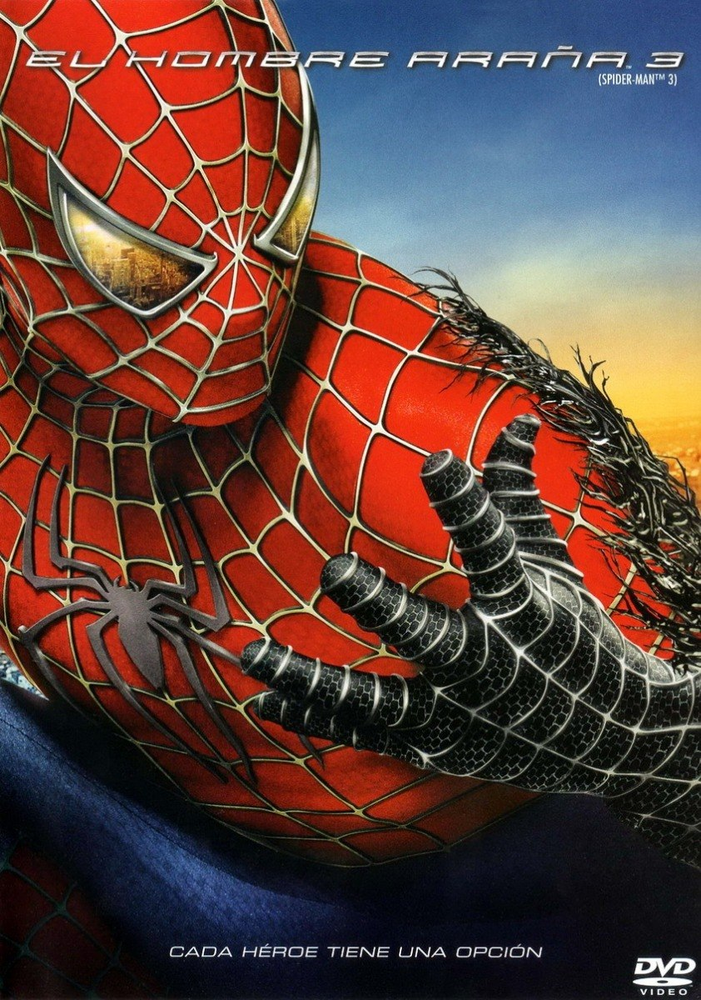

Spider-Man (2002)

Peter Parker es un estudiante tímido que, tras ser mordido por una araña radiactiva, descubre que tiene poderes sobrehumanos y decide convertirse en un héroe enmascarado para proteger Nueva York.
Peter Parker es un estudiante tímido que, tras ser mordido por una araña radiactiva, descubre que tiene poderes sobrehumanos y decide convertirse en un héroe enmascarado para proteger Nueva York.

Peter lucha por equilibrar su vida personal con sus deberes como héroe y debe enfrentarse al peligroso Doctor Octopus, un científico con tentáculos mecánicos fuera de control.

Peter enfrenta a Venom, el Hombre de Arena y el nuevo Duende Verde mientras lucha contra un simbionte alienígena que corrompe su personalidad.